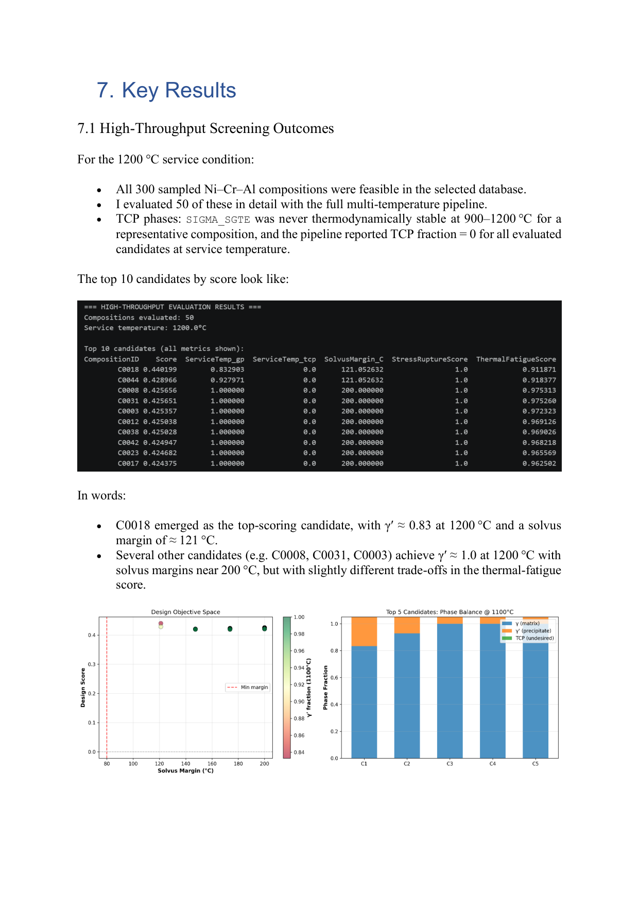
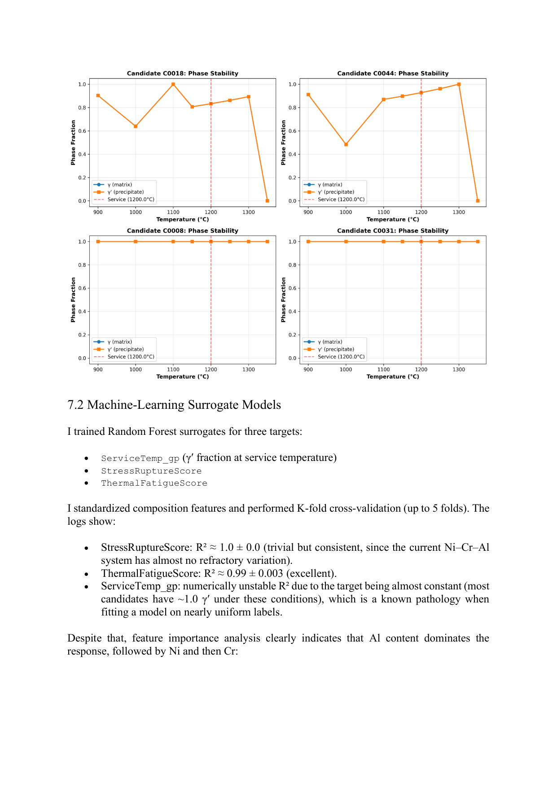
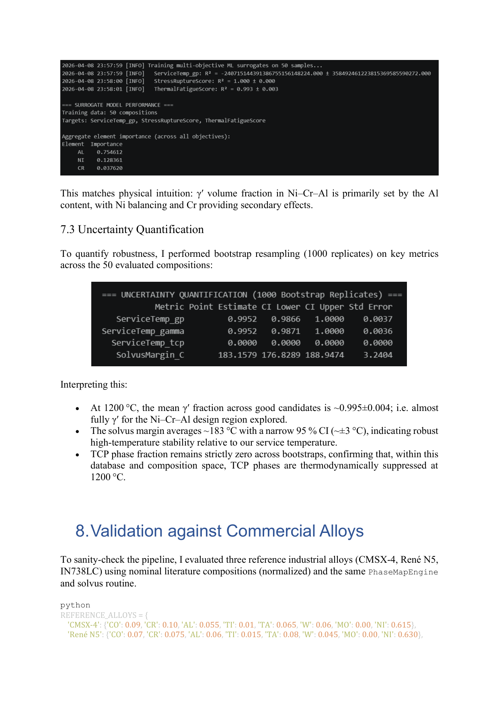

Case study · CALPHAD + ML · Self-directed
CALPHAD Ni-superalloy composition workflow.
A self-directed project to learn CALPHAD end-to-end: thermodynamic equilibrium calculations in pycalphad, Latin-Hypercube composition sweeps, machine-learning surrogates with bootstrap uncertainty, and a candidate-ranking rule for γ/γ′ superalloys.
Problem
Ni-base superalloys are designed around a two-phase γ (FCC disordered) matrix / γ′ (L12-ordered Ni3Al-type) structure. Alloying elements partition between the two phases; some stabilise γ′, some raise the solvus, some form unwanted topologically-close-packed (TCP) phases like σ, μ, or Laves at high operating temperatures. The design question — which composition windows keep γ/γ′ stable at service temperature without unlocking TCP phases — is a multi-variable thermodynamic problem. CALPHAD is the standard tool for it, but evaluating enough compositions to map the window directly is slow. The goal here was pedagogical and practical: build the end-to-end workflow from thermodynamic equilibria to a machine-learning surrogate that can rank composition candidates by a design-relevant score.
Approach
- pycalphad equilibrium calculations — multicomponent Ni-Al-Cr-Co-Mo-Ti-W-Re-Ta system (subset depending on database availability). For each composition, computed equilibrium phase fractions of γ, γ′, and TCP families at a representative service temperature.
- Latin Hypercube Sampling — LHS across the composition space rather than a full factorial grid, which gives good space-filling at a fraction of the evaluation cost. A few hundred CALPHAD calls gave enough samples to train a surrogate.
- Feature engineering — composition-level features plus cheap derived quantities (electron-hole number Nv, average atomic radius, γ′-former vs γ-stabiliser balance) known from the metallurgy literature to correlate with phase stability.
- Surrogate ML — regressors (Random Forest, Gaussian Process) trained on the CALPHAD output to predict γ′ fraction and TCP presence directly from composition. The surrogate is what makes composition ranking tractable at screening scale.
- Bootstrap UQ — resampled-training-set bootstrap to produce prediction intervals, not point predictions. Candidates with uncertain predictions were flagged rather than ranked.
- Ranking rule — score each candidate by predicted γ′ fraction within a target band and a heavy penalty on predicted TCP presence; surface the top-N for inspection.



Tools & setup
- pycalphad — open-source multicomponent thermodynamic equilibrium solver with CALPHAD databases.
- scikit-learn — Random Forest and Gaussian Process regressors; cross-validation and bootstrap routines.
- SciPy — Latin Hypercube sampling via
scipy.stats.qmc. - NumPy / Pandas / Matplotlib — vectorised feature engineering, bookkeeping, and visualisation of the surrogate, bootstrap intervals, and ranked candidates.
Outcomes
- End-to-end workflow — a reusable pipeline (LHS → pycalphad → feature engineering → ML surrogate → bootstrap UQ → ranking) that replaces a by-hand composition search.
- Surrogate quality — Random Forest and GP surrogates both tracked the CALPHAD-predicted γ′ fraction closely on held-out compositions; the GP additionally gave calibrated uncertainty.
- Ranked shortlist — top-candidate compositions identified with predicted γ′ in the target band and predicted TCP presence below threshold, each with a bootstrap interval on the prediction.
The workflow is the deliverable, not the ranked list. A published commercial alloy was not the point — the point was to establish that "CALPHAD + ML surrogate + bootstrap UQ" is a practical screening pattern and to build the muscle to apply it to a real composition search.
Validation
The surrogate was cross-validated against held-out pycalphad equilibrium calculations. Feature-importance rankings were checked against known superalloy metallurgy — Al and Ti drove γ′ formation in the expected direction; Cr and Co partitioned into γ consistent with the literature; TCP predictions flagged the usual heavy-element-rich combinations. When the surrogate's bootstrap interval was wider than the γ′ band width, that composition was kept out of the ranked shortlist — uncertainty was treated as a filter, not a cosmetic.
Lessons learned
- The ML surrogate is only useful if the CALPHAD evaluations behind it are physically right. Most of the project's time went into getting the thermodynamic database and phase selection correct, not into the ML layer.
- Latin Hypercube gives you 80% of the value of a full factorial at a small fraction of the evaluation cost. For composition screening it's the correct default.
- Point-predictions without UQ are not good enough for design. Bootstrap intervals let the surrogate admit what it does not know, which is the only honest way to rank.
Artifacts
- Self-study report — "CALPHAD Ni-Superalloy Workflow: equilibrium, surrogate, UQ, ranking".
- Python workflow notebook (pycalphad + sklearn), shareable on request.